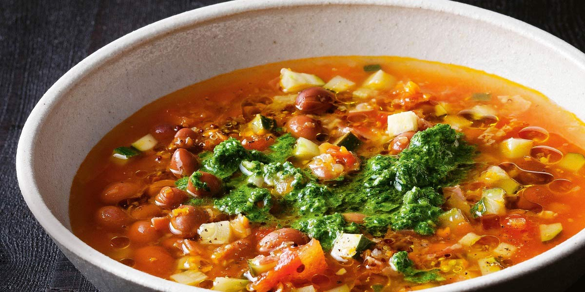

Minestrone Soup
Recipe Specification
Ingredients List
| Ingredients | Quantity |
|---|---|
| Olive Oil | 50ml |
| White Onion | 2x1 |
| Carrots | 6x1 |
| Cellery | 8 stalks |
| Garlic Cloves | 6 cloves |
| Tomato Puree | 100g |
| Vegetable Stock | 2 litres |
| Tinned Tomatoes | 1x400g |
| Cannellini Beans | 1 x400g |
| Spaghetti | 200g |
| Garden Peas | 300g |
| Salt & Pepper | To Taste |
Yield: 6-8 portions
Preparation
- Peel and finely dice white onions.
- Peel and finely dice carrots.
- Peel and crush garlic cloves.
- Wash and finely dice celery stalks.
- Snap spaghetti into smaller pieces.
Cooking Instructions
- Place a large saucepan over a medium/high heat and add the vegetable oil and butter.
- Add the dices onion, carrot and celery. Cook for 6 minutes until vegetables are soft.
- Add crushed garlic and cook for 2 minutes.
- Add tomatoes puree, chopped tomatoes and vegetable stock.
- Bring to the boil and reduce to the simmer for 25 minutes.
- Add cannellini beans, garden peas and broken spaghetti.
- Cook for a further 5 minutes and season to taste before serving.

Serving Suggestions
The soup goes well with crusty bread and lots of butter or garlic crotons.
Storing instructions
Allow to cool to room temperature before placing in an airtight container and placing in the fridge. Consume within 4 days of making it.
Reheating Instructions
Gently bring back up to temperature in saucepan on stove. Alternatively, warm in microwave for 3 minutes, stirring every 1 minute to ensure even warming.